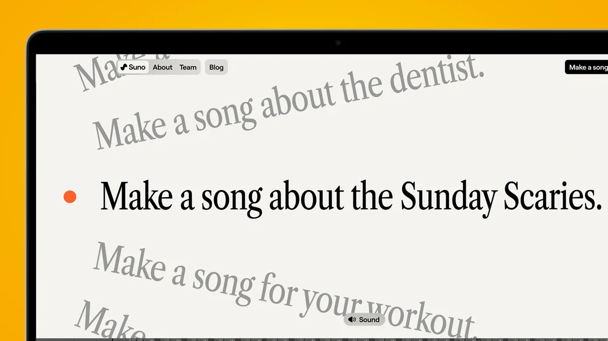

Try it now
Suno.com
Suno.com
Suno is a web-based, text-to-music generator that can whip up full songs in seconds from a simple text prompt. For example, tell it to make a 'psychedelic UK garage song about a friend with a Nokia obsession', and you'll get a couple of two-minute songs complete with vocals, instrumentation, lyrics, a song title and even artwork.
Suno boasts a variety of features that cater to both novice and professional musicians:
While Suno AI stands out for the quality of its musical outputs, it has its limitations. The songs it produces are catchy and employ rhyming lyrics, but they fall short of the profoundness found in the works of acclaimed artists like Bob Dylan. The compositions created by Suno AI are often simplistic, similar to many chart-topping songs. Suno AI’s shortcomings extend beyond its limited musical vocabulary. The software occasionally experiences what the developers describe as “hallucinations,” and its repertoire is still relatively narrow. Though it is familiar with major genres like pop, jazz, hip-hop, rock’n’roll, and classical music, Suno AI struggles to meet specific requests with precision.
With Suno AI, creating songs using a text prompt is as simple as telling a story. You just type in your ideas or how you’re feeling into the program. You could write something like, “I want a song that makes me feel brave,” or describe a scene, “A quiet forest with a soft stream running through.” Suno AI takes these prompts and uses its magic to make your words into music.
Suno AI is able to analyse the words or the lyrics passed through it using the text prompt. Then, it uses deep learning techniques to compose and develop an original tune that reflects the emotions associated with those words, with the right option.
It uses two primary models for music generation:
You can check the AI model first-hand on Suno AI’s Discord server, where you can use the /chirp command to get started with the text prompt. The AI model will then generate an original composition around those lyrics. The Suno AI model is able to generate the vocal composition and music in separate tracks, which then combine into the final song. The more specific details your prompt provides, the closer Suno AI can get to producing the exact music you are looking for.
Making music from text is really hard. Unlike making pictures or writing, music needs to flow smoothly and feel right. Here’s what the Suno team had to do:
This hard work means Suno can create music that sounds like it was made by a professional.
With Suno AI, all you have to do is type out your thoughts, feelings, or stories, and it will turn those words into an actual song! It’s like magic. If you’re feeling happy, you can write about that and Suno AI will create an upbeat, cheerful melody. If you have an exciting adventure story in mind, it can make epic, adventurous music to match. So why not give Suno AI a try? It might just help you create the new song you can’t stop humming. With Suno AI, the possibilities are endless for turning your ideas into amazing melodies.